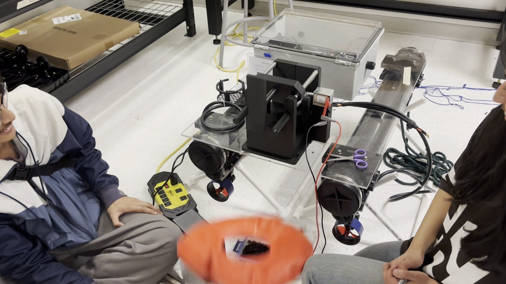

Mechatronics / Robotics / Software
Abdur Rahman Mutie
My goal is to accelerate embodied intelligence.
01 / CURRENT WORK
All projects →
What I've Been Building

PHYSICAL SYSTEM / INTEGRATIONFIELD TESTED
02
150 g vertical-spinner BattleBot
Led mechanical design through a two-week sprint; one of 7 teams from a 20+ team
field to complete an operational robot.
03
Selected mechanical mechanisms
Designed, printed, and assembled a face-tracking pan-tilt turret; co-developed a
worm-gear claw and coin-operated machine.
04
Bite Point racing simulation
Built a browser racing game with deterministic vehicle dynamics, ghost laps,
sector timing, and server-side lap verification.
05
First-person table-tennis simulation
Modelled drag, Magnus force, spin-coupled bounces, AI opponents, and authoritative
LAN multiplayer in Python.
02 / EXPERIENCE
Full case studies →